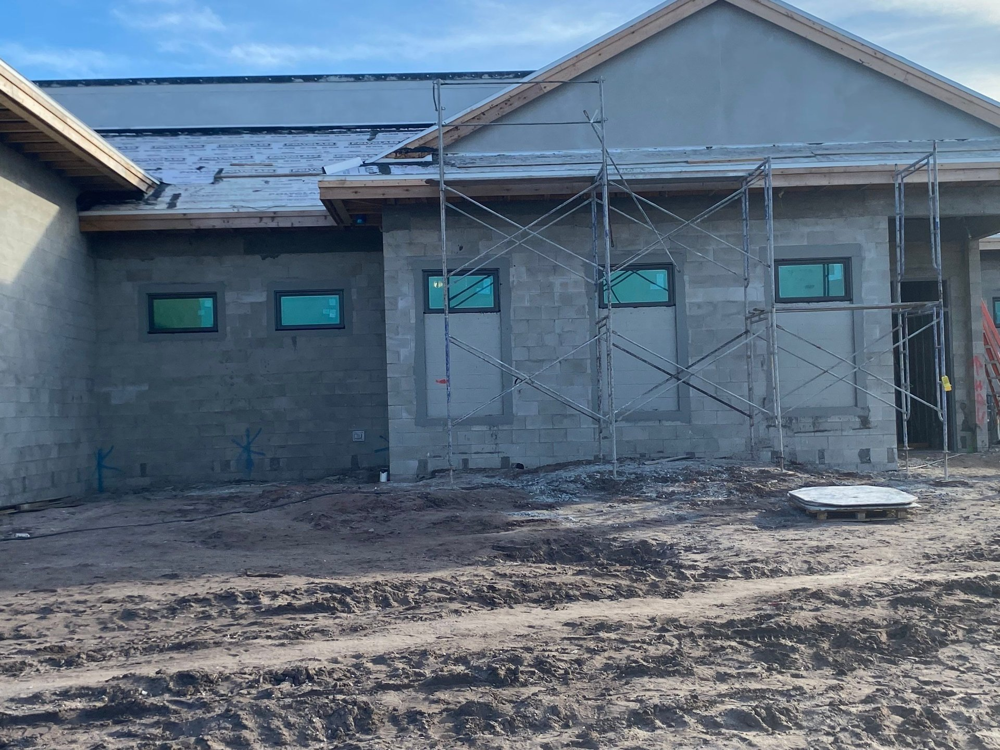

Hurricane impact windows are the central element of any Florida commercial building envelope. They are governed by specific code, tested to specific protocols, manufactured by a short list of qualified product lines, and installed by subcontractors with the licensing and commercial experience to coordinate them with the rest of a Division 08 scope. This guide covers every aspect a commercial owner, architect, or general contractor needs to know in 2026: what impact windows are, why Florida requires them, the HVHZ vs non-HVHZ split, testing and DP ratings, glass and frame selection, top commercial products, installation, permit and inspection, and pricing ranges.


What Hurricane Impact Windows Actually Are
A hurricane impact window is a tested assembly — not a piece of glass. The assembly has four required components: laminated glass with a tough polymer interlayer, a reinforced aluminum frame, a bond or mechanical capture system that holds the glass in the frame under load, and a tested anchor pattern that ties the frame to the building structure. When any of those components is substituted outside of the tested configuration, the Florida Product Approval no longer applies.
The product exists because of physics. In a hurricane, wind-borne debris — roof gravel, fence sections, broken branches, failed signage — travels at speeds sufficient to break ordinary glass. Once a building envelope is breached, the interior pressure rises rapidly, the roof deck is loaded from below, and structural failure cascades. A hurricane impact window allows the glass to crack without letting the debris pass through and without allowing the envelope to open. The building stays closed; the structural system behaves as designed.
Why Florida Commercial Code Requires Them
The Florida Building Code, 8th Edition (2023), is the governing document. The code references ASCE 7 for wind load calculations, ASTM E1886 and E1996 for non-HVHZ impact testing, and TAS 201/202/203 for HVHZ. Together these documents define where impact-rated glazing is required, to what performance level, and under what inspection process.
The key jurisdictional split:
- HVHZ (Miami-Dade and Broward counties) — All exterior openings must be impact-rated or protected. Products require a Miami-Dade NOA. This is the strictest hurricane opening standard in the United States.
- Wind-Borne Debris Region (most of coastal Florida and meaningful inland areas) — Design wind speeds exceed 140 mph. Opening protection is required. Products must carry a Florida Product Approval tested to ASTM E1886/E1996.
- Outside the Wind-Borne Debris Region (limited interior Florida) — Impact-rated opening protection is not code-required. Non-impact commercial glazing is permitted, though insurance and lender underwriting often still prefer impact.
For a full code-by-county breakdown, see our Florida commercial glazing hurricane code guide, which maps every major commercial market to its governing requirements.
How Hurricane Impact Windows Differ from Standard Commercial Glazing
A standard commercial window — a float-glass insulating unit in a basic thermally broken aluminum frame — has no tested impact resistance. It is engineered for wind pressure alone, typically at DP25 to DP40. A hurricane impact window is engineered for the same wind pressure plus wind-borne debris, at DP50 through DP100+, with laminated glass, reinforced framing, and a tested anchor configuration.
| Attribute | Standard Commercial | Hurricane Impact |
|---|---|---|
| Glass makeup | Monolithic or annealed IGU | Laminated (PVB or SGP interlayer) |
| Tested design pressure | DP25-DP40 typical | DP50-DP100+ |
| Missile test required | No | Large or small missile depending on height |
| Cyclic pressure test | No | 9,000 cycles after missile impact |
| Florida Product Approval | Not required | Required in wind-borne debris region |
| Frame reinforcement | Standard aluminum | Heavy-wall aluminum, often internal reinforcement |
| Typical installed cost (2026) | By scope | By scope |
The cost delta is real but not dramatic on a building-wide basis. See our hurricane impact vs non-impact commercial comparison for the full analysis.
Testing Protocols: What "Impact Rated" Actually Means
A window earns its impact rating by passing a two-part physical test in an accredited laboratory. The standards differ by jurisdiction but test the same physics.
Missile Impact Phase
A projectile is fired at the window. The two standard levels:
- Large Missile (Level D) — A 9-lb 2x4 at 50 fps, impacted at two locations. Required for openings within 30 feet of grade in HVHZ, and broadly used in non-HVHZ coastal commercial.
- Small Missile — Ten steel ball bearings at 89 fps fired in rapid succession. Required for openings above 30 feet.
Cyclic Pressure Phase
After the missile phase, the same window — now cracked — is subjected to 9,000 cycles of alternating positive and negative pressure. The cycles sweep across percentage bands of the product's rated design pressure, simulating hours of hurricane loading on a compromised unit. A pass requires the glass to stay in the frame, the frame to stay anchored, and the opening to remain sealed.
ASTM E1886 defines the test method; ASTM E1996 defines the performance classification. TAS 201/202/203 are the HVHZ equivalents, with slightly more stringent loading and a required third-party observer. A product tested to TAS protocols automatically qualifies for non-HVHZ use; the reverse is not true.
Design Pressure (DP) Ratings Explained
Design pressure is the pressure load (in pounds per square foot, psf) that a window has been tested to resist in both positive (wind-on) and negative (wind-off) directions. Your structural engineer calculates the required DP for each opening based on ASCE 7 — factoring building height, exposure category, roof geometry, opening location, and the design wind speed at your site.
| DP Rating | Pressure (psf) | Typical Commercial Application |
|---|---|---|
| DP50 | +50 / -50 | Low-rise interior non-HVHZ commercial |
| DP60 | +60 / -60 | Mid-rise non-HVHZ, coastal low-rise |
| DP70 | +70 / -70 | Mid-rise coastal non-HVHZ |
| DP80 | +80 / -80 | HVHZ low-rise, non-HVHZ high-rise coastal |
| DP100+ | +100 / -100 or higher | HVHZ mid/high-rise, hospital and essential facilities |
Specifying a higher DP than calculated is acceptable and often advisable for future-proofing. Specifying a lower DP is a code violation and will fail permit review. The relationship between calculated DP and tested DP is audited at plan review and again at final inspection.
Glass Makeup: PVB vs SGP Interlayer
The laminated glass interlayer is the single component that makes impact glass work. Two interlayer types dominate commercial:
PVB (Polyvinyl Butyral)
The legacy standard. Tough, flexible, used in every automotive windshield. In commercial applications, PVB works well for small to mid-size lites at moderate DP. On large commercial lites or higher DP, PVB's lower stiffness can require thicker laminates to meet resistance targets.
SGP (SentryGlas, Ionoplast)
Roughly 100 times stiffer and five times stronger in tear than PVB. The preferred interlayer for large commercial lites, high-DP applications, HVHZ, and oversized storefront. SGP also retains performance at higher temperatures, which matters for south-facing Florida commercial.
For most ACG commercial projects in the HVHZ or large-lite storefront category, we specify SGP interlayer on ESWindows systems. For smaller non-HVHZ projects with modest DP, PVB remains cost-efficient and meets performance targets. For the detailed comparison, see our impact glass vs laminated glass article.
Leading Commercial Impact Window Systems
Most commercial impact glazing in Florida is delivered by a short list of manufacturers with commercial-scale product approvals. ACG's primary product partner for commercial impact is ESWindows, a Colombia-based manufacturer with extensive Florida Product Approvals and Miami-Dade NOAs across the commercial line.
ESWindows ES-8000 Pre-Glazed Storefront
Front-set aluminum storefront system with impact-rated glass installed at the factory. The system ships complete to the jobsite, where installers set the pre-glazed units as a single component — eliminating the field-glazing sequence entirely. Typical DP range DP60 to DP90 with Large Missile. Used on Wave Food Hall (Cocoa Beach), Baron Shoppes Tradition, and Dale Mabry Retail (Tampa).
ESWindows ES-9000 Window Wall
Stick-built or unitized window wall for mid-rise commercial. Available in impact-rated configurations up to DP100+ with laminated IGU. Used on residential-style and mixed-use commercial where floor-to-floor glazing is required.
ESWindows SGD-2020 Sliding Glass Door
Commercial-grade impact-rated sliding door for mixed-use retail and hospitality. HVHZ-approved configurations available.
Other Qualified Commercial Product Lines
PGT Architectural (the commercial arm of PGT Industries), ESWindows, a competing fabricator, and ESWindows all offer commercial impact storefront and window wall with Florida Product Approvals. Selection typically comes down to lead time, aesthetic match, DP range needed, and the installer's experience with the system.
Installation: Pre-Glazed vs Field-Glazed
The biggest practical differentiator on a commercial impact project is whether the storefront arrives pre-glazed or gets glazed in the field.
Pre-glazed storefront — ESWindows and a handful of other manufacturers ship units with the glass already installed in the frame. On site, installers set the complete assembly, anchor it, and seal the perimeter. The factory glazing operation is controlled, consistent, and verified. Field labor is faster and weather-tolerant.
Field-glazed storefront — Frames arrive, get anchored, and the glass is installed at the jobsite with structural silicone or gaskets. This method dominates window wall and curtainwall and is unavoidable at larger scales. It requires tighter weather windows, more skilled glazing labor, and more quality control.
For occupied commercial retrofits — where schedule certainty matters most — pre-glazed storefront is typically the faster path. For new construction high-rise window wall, field-glazed is usually the only option.
Permit and Inspection Process
A Florida commercial impact window installation goes through three regulatory touchpoints.
- Plan review — The building department reviews the specified product's Florida Product Approval or Miami-Dade NOA against the calculated design pressures and opening configurations. The approval must explicitly cover the installed conditions: substrate, anchor pattern, glass makeup, size.
- In-progress inspection — On commercial projects, the AHJ inspects the anchor attachment before frames are fully enclosed. In HVHZ, this is mandatory and non-waivable.
- Final inspection — A certificate of compliance is issued verifying the installed assembly matches the approved product and the design pressures meet the engineering. In many HVHZ projects, this includes wet-signed documentation by the installing contractor and the qualifier.
A qualified commercial glazing subcontractor (CGC-licensed) handles all three touchpoints as part of the install scope. ACG's CGC license (CGC1531993, Connor Walsh qualifier) anchors the regulatory side for our clients.
2026 Commercial Hurricane Impact Window Pricing
Installed pricing varies with system type, DP rating, HVHZ status, project size, height, and existing-building conditions. Rough 2026 Florida ranges:
These are envelope scope ranges, not bare glass. They include frame, glass, hardware, anchor, perimeter seal, and installation labor — the complete Division 08 glazing scope. For a full pricing methodology, see our commercial impact glass cost guide.
ROI and Insurance Savings
The investment case for hurricane impact windows on a Florida commercial hold rests on three compounding factors.
- Insurability preservation — Carriers increasingly require impact-rated opening protection as a condition of coverage on Florida commercial. Properties with non-impact glazing face non-renewal risk.
- Asset valuation — Impact-rated envelope is a value signal in the CRE market. Buyers underwrite impact-protected assets with lower reserves and more favorable refinance terms.
On a 10-year hold, the combined effect typically more than offsets the capital differential between impact and non-impact glazing. For a worked example, see our commercial glass property value article.
Choosing a Commercial Hurricane Window Installer
Not every glazing contractor does commercial-scale hurricane impact work. The qualifications that matter:
- CGC license (not CBC or residential) with a named qualifier
- Past commercial impact projects at comparable scale and height
- Direct relationship with the specified manufacturer (not a downstream distributor)
- Procore-active for GC coordination
- Florida-specific HVHZ experience if the project is in Miami-Dade or Broward
ACG's Commercial Hurricane Impact Practice
ACG is a CGC-licensed Florida commercial glazing subcontractor (CGC1531993, Connor Walsh qualifier) with offices in West Palm Beach, Naples, and Tampa. Commercial Division 08 scope, statewide. Primary commercial impact product partner: ESWindows. Recent commercial hurricane impact projects include Wave Food Hall (Cocoa Beach), KLUS Lighting (Vero Beach), Lake Park Innovation, Baron Shoppes Tradition, Dale Mabry Retail (Tampa), Bobcat Treasure Coast, Harbour Cay II, and Villa L'Onz (Riviera Beach).
Ready to get started?
Send plans and we return a detailed scope with system recommendations and 2026 pricing inside 48 hours. Call (772) 486-7711 or email connor@acglass.com.